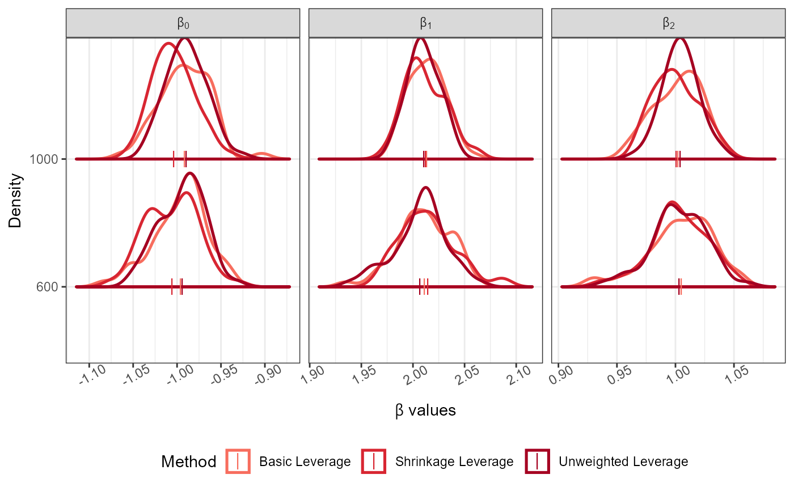
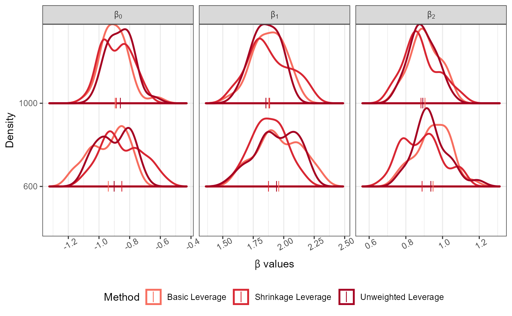
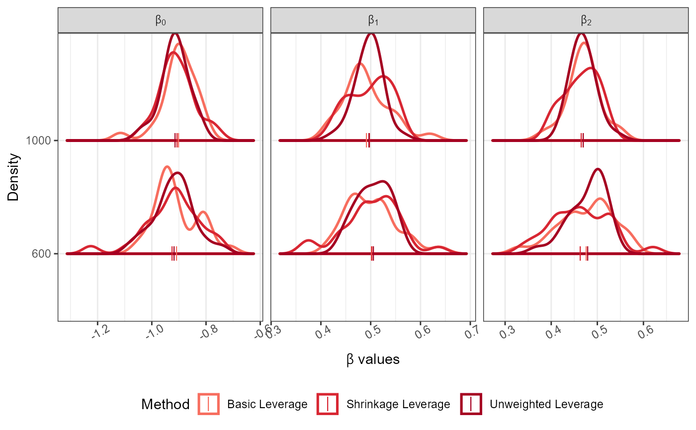

Basic and shrinkage leverage sampling for Generalised Linear Models
Source:R/LeverageSampling.R
LeverageSampling.RdUsing this function sample from big data under linear, logistic and Poisson regression to describe the data. Sampling probabilities are obtained based on the basic and shrinkage leverage method.
Arguments
- r
sample size
- Y
response data or Y
- X
covariate data or X matrix that has all the covariates (first column is for the intercept)
- N
size of the big data
- S_alpha
shrinkage factor in between 0 and 1
- family
a character vector for "linear", "logistic" and "poisson" regression from Generalised Linear Models
Value
The output of LeverageSampling gives a list of
Beta_Estimates estimated model parameters in a data.frame after sampling
Variance_Epsilon_Estimates matrix of estimated variance for epsilon in a data.frame after sampling (valid only for linear regression)
Sample_Basic_Leverage list of indexes for the optimal samples obtained based on basic leverage
Sample_Shrinkage_Leverage list of indexes for the optimal samples obtained based on shrinkage leverage
Sampling_Probability matrix of calculated sampling probabilities for basic and shrinkage leverage
Details
Leverage sampling algorithm for big data under Generalised Linear Models (linear, logistic and Poisson regression).
First is to obtain a random sample of size \(min(r)/2\) and estimate the model parameters. Using the estimated parameters leverage scores are evaluated for leverage sampling.
Through the estimated leverage scores a sample of size \(r\) was obtained. Finally, the sample of size \(r\) is used and the model parameters are estimated.
NOTE : If input parameters are not in given domain conditions necessary error messages will be provided to go further.
If \(r\) is not satisfied then an error message will be produced.
If the big data \(X,Y\) has any missing values then an error message will be produced.
The big data size \(N\) is compared with the sizes of \(X,Y\) and if they are not aligned an error message will be produced.
If \(0 < \alpha_{S} < 1\) is not satisfied an error message will be produced.
A character vector is provided for family and if it is not of the any three types an error message
will be produced.
References
Ma P, Mahoney M, Yu B (2014). “A statistical perspective on algorithmic leveraging.” In International conference on machine learning, 91--99. PMLR. Ma P, Sun X (2015). “Leveraging for big data regression.” Wiley Interdisciplinary Reviews: Computational Statistics, 7(1), 70--76.
Examples
Dist<-"Normal"; Dist_Par<-list(Mean=0,Variance=1,Error_Variance=0.5)
No_Of_Var<-2; Beta<-c(-1,2,1); N<-5000; Family<-"linear"
Full_Data<-GenGLMdata(Dist,Dist_Par,No_Of_Var,Beta,N,Family)
r<-rep(100*c(6,10),50); Original_Data<-Full_Data$Complete_Data;
LeverageSampling(r = r, Y = as.matrix(Original_Data[,1]),
X = as.matrix(Original_Data[,-1]),N = nrow(Original_Data),
S_alpha = 0.95,
family = "linear")->Results
#> Basic and shrinkage leverage probabilities calculated.
#> Sampling completed.
plot_Beta(Results)
#> Picking joint bandwidth of 0.0106
#> Picking joint bandwidth of 0.00846
#> Picking joint bandwidth of 0.00826

Dist<-"Normal"; Dist_Par<-list(Mean=0,Variance=1)
No_Of_Var<-2; Beta<-c(-1,2,1); N<-5000; Family<-"logistic"
Full_Data<-GenGLMdata(Dist,Dist_Par,No_Of_Var,Beta,N,Family)
r<-rep(100*c(6,10),25); Original_Data<-Full_Data$Complete_Data;
LeverageSampling(r = r, Y = as.matrix(Original_Data[,1]),
X = as.matrix(Original_Data[,-1]),N = nrow(Original_Data),
S_alpha = 0.95,
family = "logistic")->Results
#> Basic and shrinkage leverage probabilities calculated.
#> Sampling completed.
plot_Beta(Results)
#> Picking joint bandwidth of 0.0491
#> Picking joint bandwidth of 0.0697
#> Picking joint bandwidth of 0.0406

Dist<-"Normal";
No_Of_Var<-2; Beta<-c(-1,0.5,0.5); N<-5000; Family<-"poisson"
Full_Data<-GenGLMdata(Dist,NULL,No_Of_Var,Beta,N,Family)
r<-rep(100*c(6,10),25); Original_Data<-Full_Data$Complete_Data;
LeverageSampling(r = r, Y = as.matrix(Original_Data[,1]),
X = as.matrix(Original_Data[,-1]),N = nrow(Original_Data),
S_alpha = 0.95,
family = "poisson")->Results
#> Basic and shrinkage leverage probabilities calculated.
#> Sampling completed.
plot_Beta(Results)
#> Picking joint bandwidth of 0.0293
#> Picking joint bandwidth of 0.0182
#> Picking joint bandwidth of 0.0192
